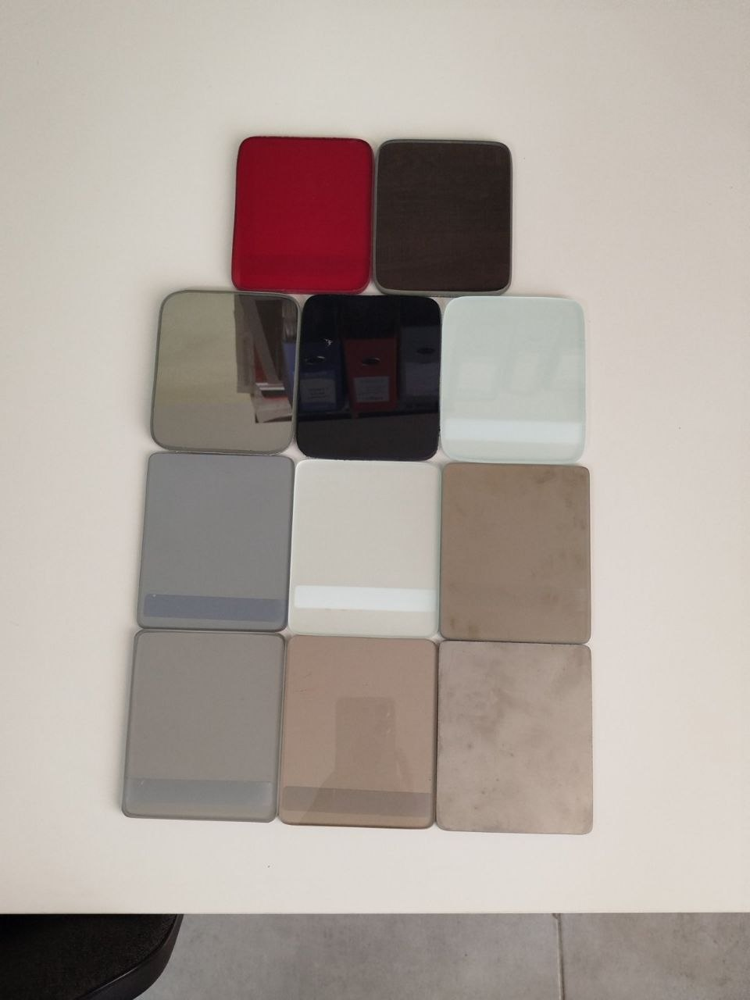

УСЛУГА
Ремонт окон
Устранение сквозняков, регулировка, замена фурнитуры и уплотнителей. Быстро и качественно.

Быстрая диагностика и ремонт
Наши мастера выполняют точную диагностику и ремонт на месте — устраняем причины сквозняков и заеданий, восстанавливаем герметичность и корректируем работу створок.
- Диагностика и определение причин
- Регулировка петель и створок
- Замена ручек и запорных механизмов
- Обновление уплотнителей и герметизация
- Мелкий ремонт на выезде в течение дня
Телефон для вызова мастера: 079-036-904
Гарантия и советы
После ремонта наши специалисты дают рекомендации по уходу за фурнитурой и уплотнителями, а также оставляют гарантию на выполненные работы.